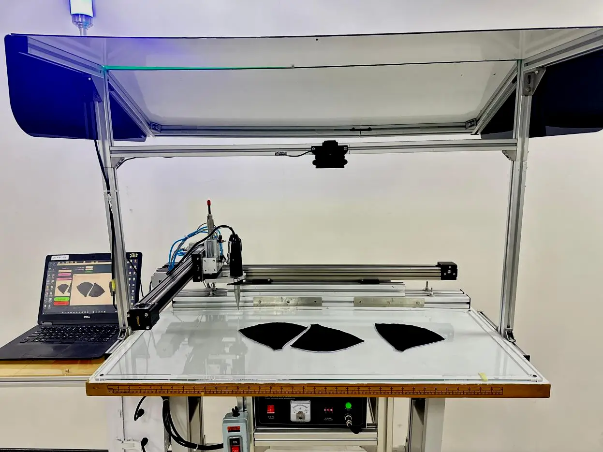

Linked Q1 Paper
In Production · MAS
Intelligent Ultrasonic Tacking System
Vision-guided sub-pixel localization on 2D textile surfaces for robotic ultrasonic tacking. I solely developed the algorithms and software; the method is published in Results in Engineering.
Read the paper